“Fight, Remember, Survive, Forward!”— Janorovic Volkov
Online · Somewhere In The Night
Just a normal
Software Engineer, Wikipedia Contributor, and Wikipedia Administrator
This is my small corner of the internet for half-formed ideas, digital experiments, useful things, and whatever comes next.
Projects in
motion.
Liska Linux · Black Fox · FoxTools · LiškovBot · Many more...
↗
EST 2022
Scroll to explore ↓
A visual log
Small scenes,
different angles
Fragments from the places, screens, and moments that shape the work.
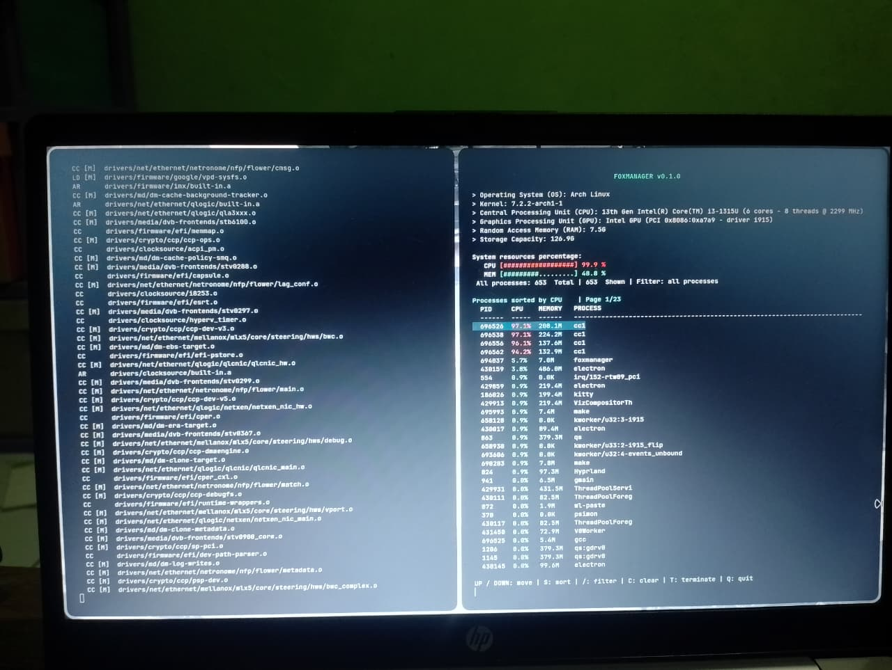
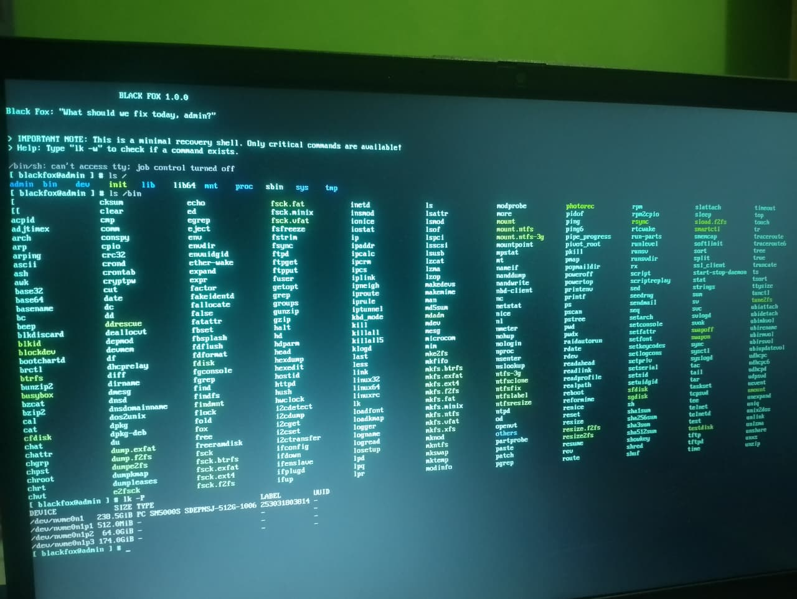
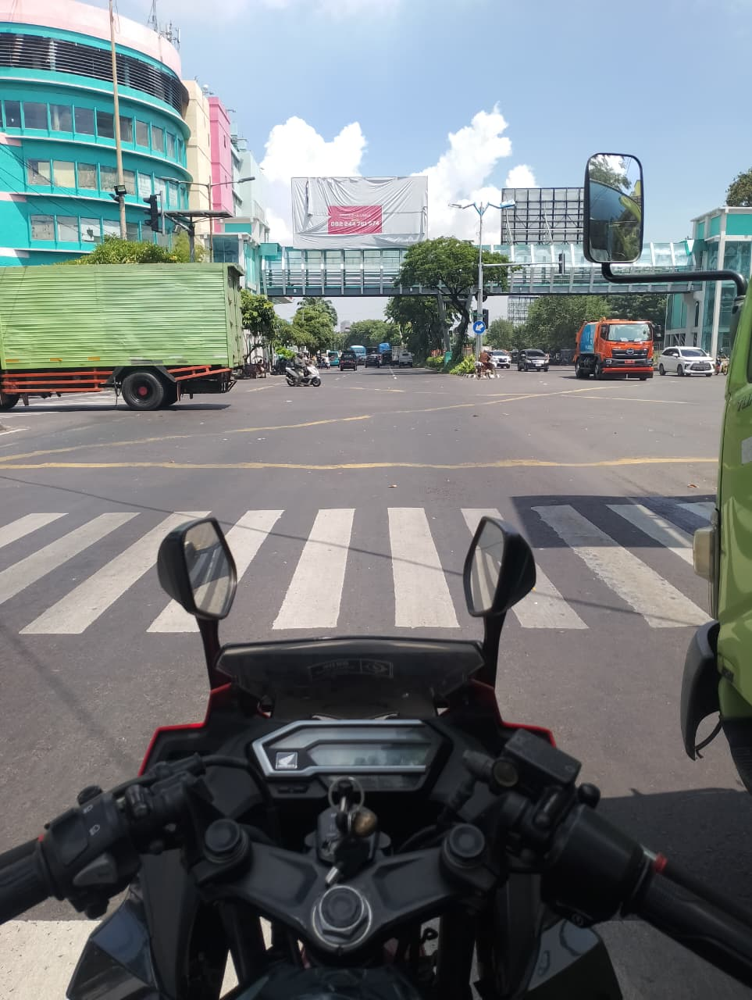
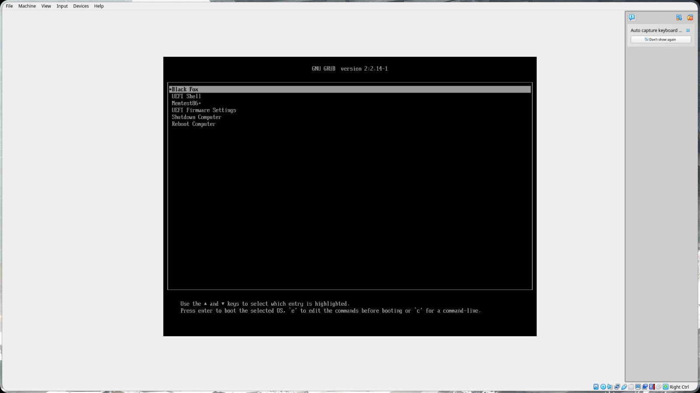
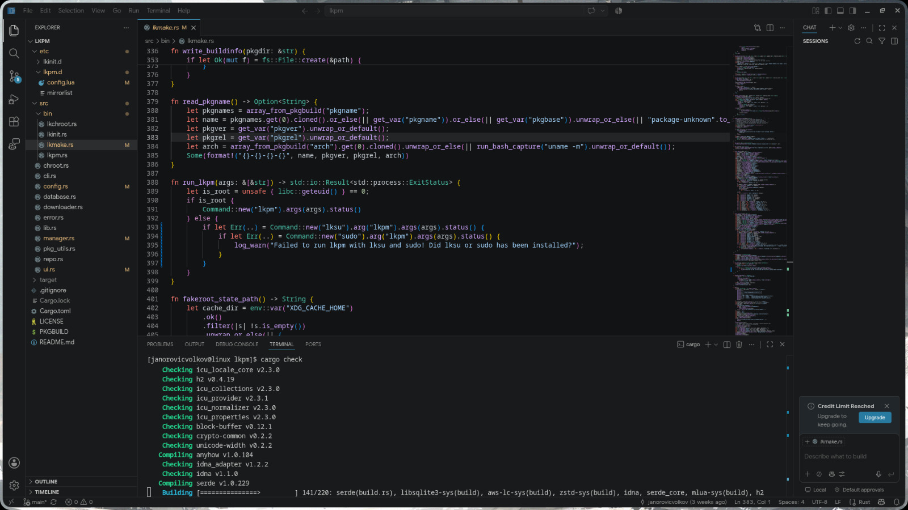
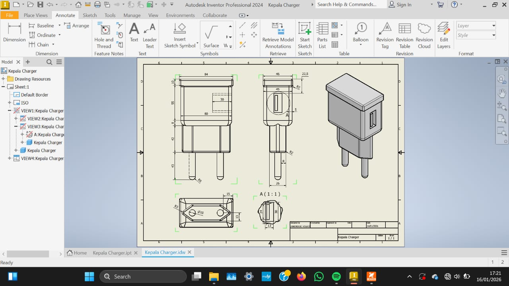
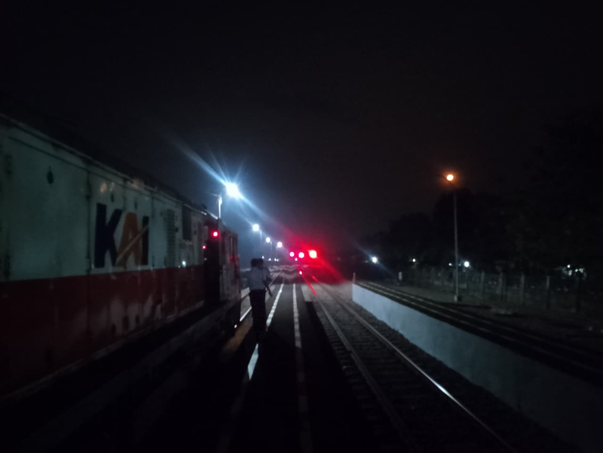
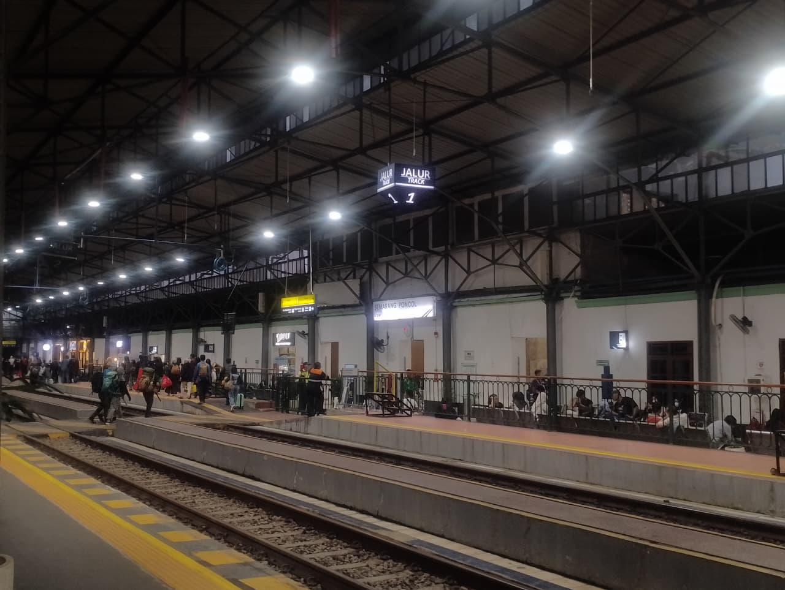
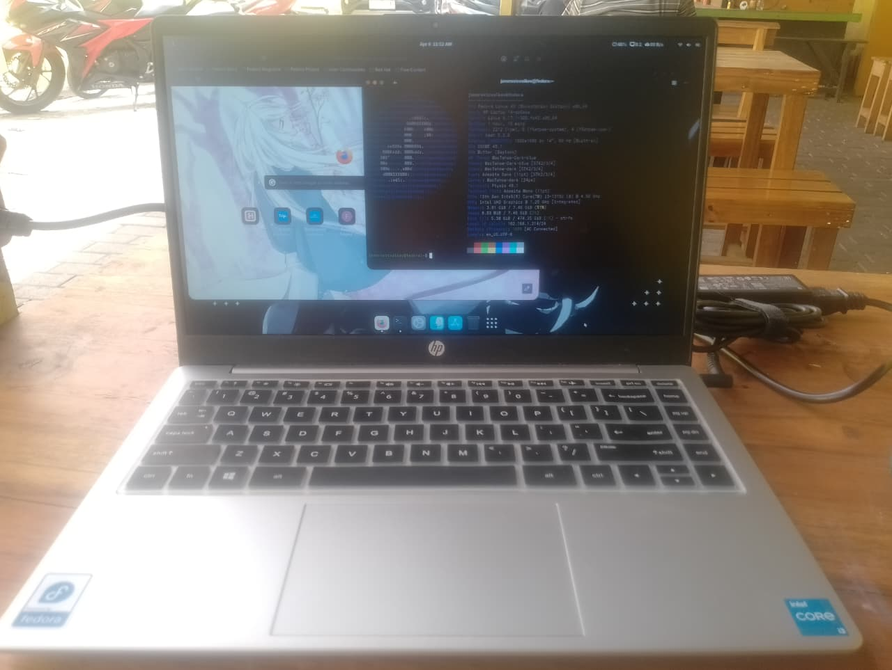
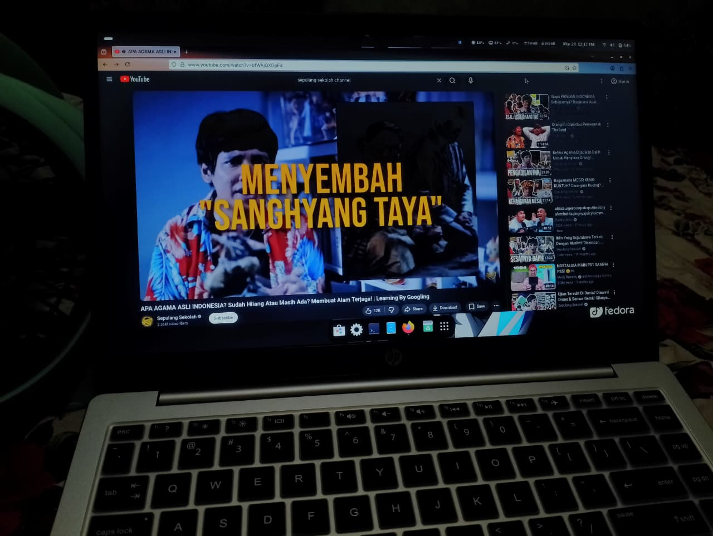
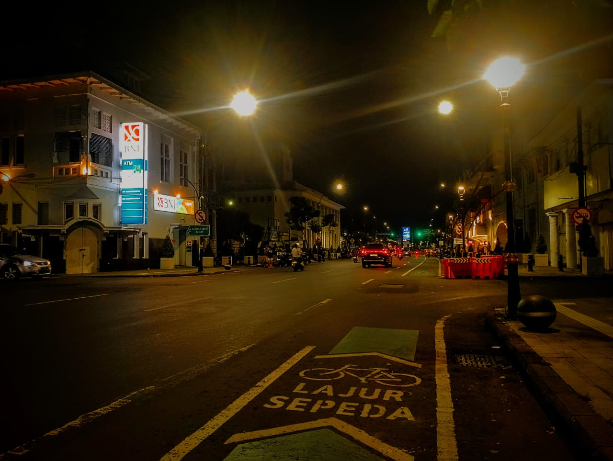
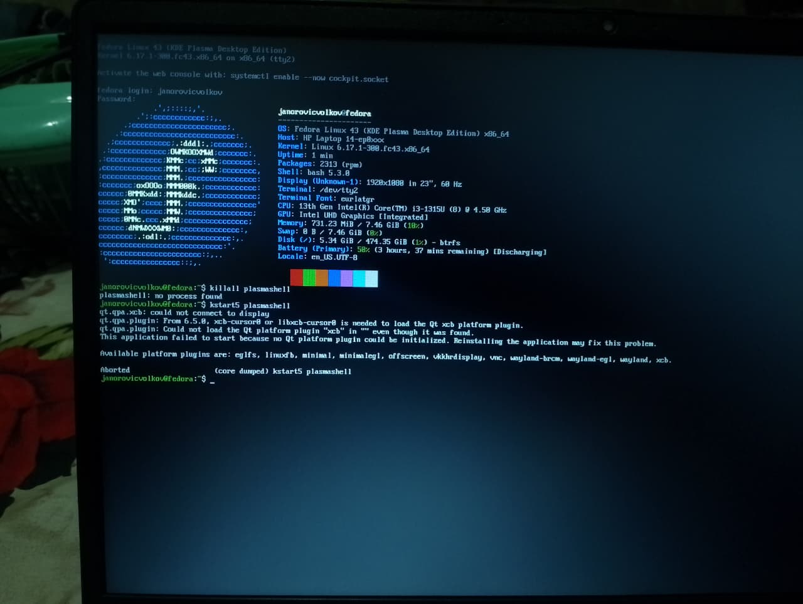